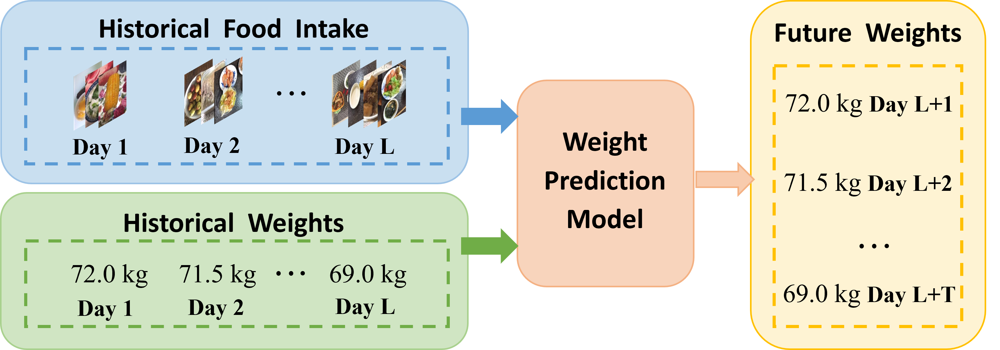

Current research in food analysis primarily concentrates on tasks
such as food recognition, recipe retrieval and nutrition estimation
from a single image. Nevertheless, there is a significant gap in
exploring the impact of food intake on physiological indicators (e.g.,
weight) over time. This paper addresses this gap by introducing
the DietDiary dataset, which encompasses daily dietary diaries and
corresponding weight measurements of real users. Furthermore,
we propose a novel task of weight prediction with a dietary diary
that aims to leverage historical food intake and weight to predict
future weights. To tackle this task, we propose a model-agnostic
time series forecasting framework. Specifically, we introduce a
Unified Meal Representation Learning (UMRL) module to extract
representations for each meal. Additionally, we design a diet-aware
loss function to associate food intake with weight variations. By
conducting experiments on the DietDiary dataset with two state-of-
the-art time series forecasting models, NLinear and iTransformer,
we demonstrate that our proposed framework achieves superior
performance compared to the original models.
